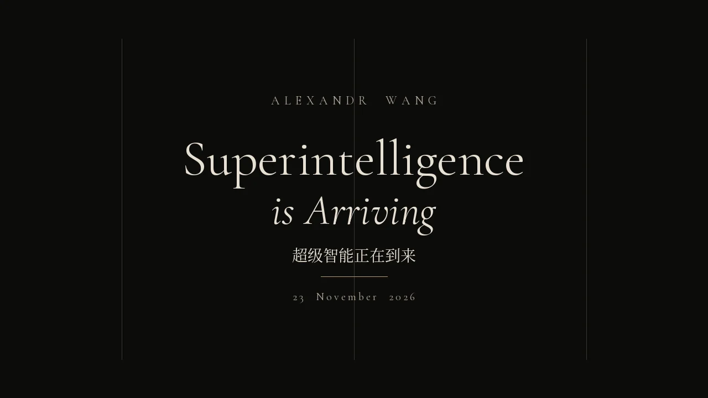

Alexandr Wang 在 X 简介里自称 Meta 首席 AI 官、Meta Superintelligence Labs 创始人、Scale AI 创始人。这篇短文把刚发生的黎曼猜想证明，看成超级智能正在到来的明确标志。他写到，这项发现是在「一个我们并不理解的异类心智」帮助下完成的，但文中没有写出证明者或所用系统的名字。
就在他发文前不久，Levent Alpöge 于 2026 年 11 月 20 日发布了一份约 1,700 万行的 Lean 证明库。次日，Lean FRO 与 Mathlib Initiative 发表联合声明，确认该库证明的正是 Mathlib 中的黎曼猜想陈述，并同时表示，数学共同体还需要继续解释其中的新想法。以下关于这项证明的分量、人工智能将全面超越人类、以及行业默认路径的判断，均为原文自述，不是对本证明或对各家实验室能力的独立评测。

长文全文中译
《Superintelligence is Arriving》 · 作者 Alexandr Wang
超级智能正在到来。人类在接下来一年里如何行动，将极大影响我们会生活在怎样的未来世界里。
作为大半生都在数学和科学里度过的人，我认为黎曼猜想的证明，清楚地标志着一场重大变化的开始。对大多数学过数学的人来说，这代表着智识成就的绝对顶峰——就纯粹的智力分量与强度而言，人类以往的任何成就都无法与证明黎曼猜想相比。我在新墨西哥州的洛斯阿拉莫斯长大，许多物理学家都会同意：与黎曼猜想相比，原子弹的发现不过是一道作业题。我们刚刚见证的这项发现，其分量再怎么强调都不为过——它是在一个我们并不理解的异类心智帮助下完成的。
对参加过数学竞赛的人来说，类似「糟了，一切都要变了」的时刻，出现在 2024 年 12 月：模型开始用 o3 在 AIME 上拿到接近满分。就纯粹的智力难度而言，最难的 AIME 题，远难于即便最顶尖的工程师和商界人士日常需要解决的问题。当然，要让模型在其他领域真正用起来，还需要领域知识、上下文、诀窍，以及其他战术上的约束；但原始智力的不足，已经不是瓶颈。事实上，过去两年里，随着我们补上这些非智力因素，其他领域的进展极为可观——编程几乎已被攻克，极为强大的网络能力已经出现，强大的智能体能力也让模型成为了通用的得力助手。
这里的关键洞见其实很简单：最难的 AIME 题在智力上非常困难，远难于大多数编程工作、大多数网络工作、大多数商务工作等等；而过去两年，我们一直在填补那些空隙，好让模型把这些事做成。
需要说清楚的是，AIME 是青少年的一项课外活动；黎曼猜想则可能是人类想出过的、在智力上最苛求的问题，过去 150 年里，一些最出色的头脑把一生献给了它。在麻省理工，我的教授们会说，人类几乎每一个主要研究领域里最难的智力问题，都比黎曼猜想「更容易」，尽管它们还有实验、数据和反馈回路等其他挑战。模型要在每个领域大大超越人类，剩下的缺口不再是智力，而是领域特有的诀窍、配套工程，以及实验。这意味着，人工智能很可能会成为几乎每一个领域里最大的进步贡献者，大幅超过最优秀的人类。
这一点对人工智能研究本身大概也同样成立。大多数研究者都会同意，人工智能研究在智力要求上，当然远低于证明黎曼猜想。模型显然将有足够的智力，去自动化全部的人工智能研究，并在改进自身上明显超过人类——同时还会极大地加速生物学研究、武器研究、经济学研究，以及更多领域。其影响是巨大的。正如数学共同体还没有完全消化黎曼猜想的证明一样，几乎每一个领域都可能以人类无法理解或监视的速度被加速。
现在，我们极其需要认真想清楚：自己想要怎样的未来，以及如何抵达那里。很难想象，在完全不受约束的递归自我改进面前，人类还能保持控制。同样很难想象，面对在每个领域都比人类聪明、能干一千倍的超级智能，人类还能保持控制。既然能力进步上的科学与技术问题很可能已经解决，我们不仅必须在安全、对齐和安保这些极为紧迫的领域取得进展，还必须开始认真思考，如何审慎地向前走。
我注意到，人工智能行业里有一种特别的懒惰想法：超级智能（ASI）不可避免，唯一要解决的问题只是如何安全地实现它；但事关的远不止这些。我们不应安于把社会「移交」给人工智能。我们应当努力去建造一种能为人类带来积极未来的技术，让所有人都拥有更大的能动性与权能。我坚信这是可能的，但这很可能需要整个行业采取与眼前「默认路径」显著不同的行动。
英文原文
《Superintelligence is Arriving》 · Alexandr Wang
Superintelligence is arriving. How humanity acts over the next year will have great consequence on what future world we live in.
As someone who has spent much of my life in math and science, I see the proof of the Riemann Hypothesis as clearly marking the beginning of a significant change. For most who have studied math, this represents the absolute pinnacle of intellectual accomplishment—nothing humanity has ever accomplished compares to proving the Riemann Hypothesis in terms of sheer intellectual might and strength. As someone who grew up in Los Alamos, New Mexico, many physicists would agree that the discovery of the atomic bomb is a homework problem compared to the Riemann Hypothesis. It is hard to overstate the magnitude of discovery that we have just witnessed—completed with the help of an alien mind that we don’t understand.
For those who did math competitions, there was a similar moment of “oh shit everything is about to change” when the models began acing the AIME in December 2024 with o3. The hardest AIME problems are much harder in terms of sheer intellectual difficulty than the problems that even the most advanced engineers and business people need to solve on a day-to-day basis. There of course is domain-specific knowledge, context, know-how, and other tactical constraints that were needed to unlock the models across other areas, but lack of raw intelligence was not the bottleneck. And in fact, the progress across other domains over the past 2 years as we’ve mitigated these non-intelligence factors has been immense—we have seen coding be nearly solved, the emergence of extremely powerful cyber capabilities, and strong agentic capabilities which have enabled the models to become general-purpose useful aides.
Again the key insight here was simply that the hardest AIME problems are intellectually very difficult, far more difficult than most coding work, most cyber work, most business work, etc., and over the past two years we have been filling in the gaps to enable the models to accomplish those things.
To be clear, AIME is an extracurricular activity for teenagers; the Riemann Hypothesis may be the most intellectually demanding problem humanity has ever devised, which some of the most brilliant humans over the past 150 years have dedicated their lives to. At MIT, my professors would have said the hardest intellectual problems in nearly every major field of human study are “easier” than the Riemann Hypothesis, albeit with other challenges such as experimentation, data, and feedback loops. The remaining gaps for models to greatly surpass humanity in every field are no longer intelligence; they are domain-specific know-how, plumbing, and experimentation. This means it is likely that AI will become the greatest contributor of progress across nearly every field, vastly outperforming the best humans.
Notably, this is likely true of AI research. Most researchers would agree that AI research is certainly much less intellectually demanding than solving the Riemann Hypothesis. The models are clearly going to be intelligent enough to automate all of AI research and be clearly superhuman at improving themselves—along with massively accelerating biological research, weapons research, economics research, and more. The implications are enormous. In the same way that the math community has not fully digested the proof of the Riemann Hypothesis, nearly every field could be accelerated at a pace beyond what humans can understand or monitor.
It is now incredibly important for us to be thoughtful about the future we want and how we get there. It is hard to imagine a world where humanity can maintain control over fully unconstrained recursive self-improvement. It is equally hard to imagine a world where humanity maintains control with superintelligence that is 1000x smarter and more capable than humans in every field. Now that we are at a point where the scientific and technical problems on capability progress are likely solved, we must not only make progress in the extremely urgent areas of safety, alignment, and security, but we have to start thinking through how we progress thoughtfully.
I notice a particular form of lazy thinking within the AI industry, which is that ASI is inevitable and the only problem to solve is how to do it safely, but there is much more at stake. We should not be okay with a “handover” of society to AI. We should endeavor ourselves to build a technology which delivers a positive future for humanity, where all humans have greater agency and empowerment. I strongly believe this is possible, but likely involves the whole industry taking meaningfully different actions from the “default path” in front of us.